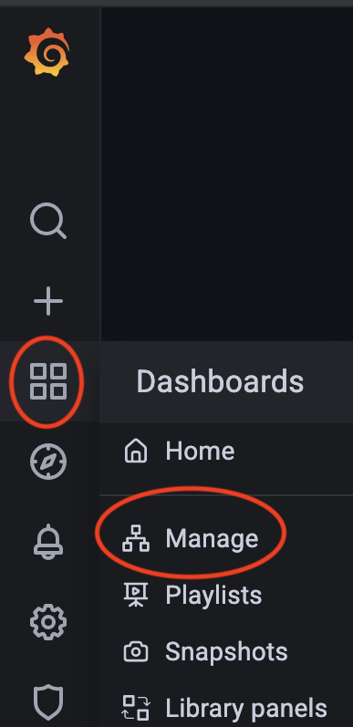

Lab 6 Monitoring with Prometheus Operator¶
The Prometheus Operator is a tool developed and opnesourced by CoreOS that aims to automate manual operations of Prometheus and Alertmanager on Kubernetes using Kubernetes Custom Resource Definitions (CRDs).
The Prometheus Operator provides easy monitoring definitions for Kubernetes services and deployment and management of Prometheus instances.
Once installed, the Prometheus Operator provides the following features:
- Kubernetes Custom Resources: Use
Kubernetescustom resources to deploy and managePrometheus,Alertmanager, and related components. - Simplified Deployment Configuration: Configure the fundamentals of Prometheus like versions, persistence, retention policies, and replicas from a native Kubernetes resource.
- Target Services via Labels: Automatically generate monitoring target configurations based on familiar Kubernetes label queries; no need to learn a Prometheus specific configuration language.
Objective:
- Explore the operators' deployment setup
- Configure
ServiceMonitor, which declaratively specifies how groups of Kubernetes services should be monitored. The Operator automatically generates Prometheus scrape configuration based on the current state of the objects in the API server. - Configure
PrometheusRuleandAlertmanagerConfigto be able to send Slack alerts
0 Create Regional GKE Cluster on GCP¶
Step 1 Enable the Google Kubernetes Engine API.
gcloud services enable container.googleapis.com
Step 2 From the cloud shell, run the following command to create a cluster with 1 node:
gcloud container clusters create k8s-prometheus-labs \
--region us-central1 \
--enable-ip-alias \
--enable-network-policy \
--num-nodes 1 \
--machine-type "t2d-standard-8" \
--release-channel regular
gcloud container clusters get-credentials k8s-prometheus-labs --region us-central1
Step 3: (Optional) Setup kubectx
sudo apt install kubectx
Note
we've installed kubectx + kubens: Power tools for kubectl:
- kubectx helps you switch between clusters back and forth
- kubens helps you switch between Kubernetes namespaces smoothly
1 Install Prometheus Operator and Grafana Helm Charts¶
1.1 Install kube-prometheus-stack helm chart¶
kube-prometheus kube-prometheus provides example configurations for a complete cluster monitoring stack based on Prometheus and the Prometheus Operator. This includes deployment of multiple Prometheus and Alertmanager instances, metrics exporters such as the node_exporter for gathering node metrics, scrape target configuration linking Prometheus to various metrics endpoints, and example alerting rules for notification of potential issues in the cluster.
helm chart The prometheus-community/kube-prometheus-stack helm chart provides a similar feature set to kube-prometheus. For more information, please see the chart's readme
Step 1 Configure Helm repository
helm repo add prometheus-community https://prometheus-community.github.io/helm-charts
helm repo update
Step 2 Fetch Helm repository to local filesystem
cd ~/$MY_REPO/notepad-infrastructure/helm
helm pull prometheus-community/kube-prometheus-stack
tar -xvzf kube-prometheus-stack-18.0.5.tgz
cd kube-prometheus-stack
tree -L 2
Output:
── charts
│ ├── grafana
│ ├── kube-state-metrics
│ └── prometheus-node-exporter
├── crds
│ ├── crd-alertmanagerconfigs.yaml
│ ├── crd-alertmanagers.yaml
│ ├── crd-podmonitors.yaml
│ ├── crd-probes.yaml
│ ├── crd-prometheuses.yaml
│ ├── crd-prometheusrules.yaml
│ ├── crd-servicemonitors.yaml
│ └── crd-thanosrulers.yaml
├── templates
│ ├── NOTES.txt
│ ├── _helpers.tpl
│ ├── alertmanager
│ ├── exporters
│ │ ├── core-dns
│ │ ├── kube-api-server
│ │ ├── kube-controller-manager
│ │ ├── kube-dns
│ │ ├── kube-etcd
│ │ ├── kube-proxy
│ │ ├── kube-scheduler
│ │ ├── kube-state-metrics
│ │ ├── kubelet
│ │ └── node-exporter
│ ├── grafana
│ ├── prometheus
│ └── prometheus-operator
└── values.yaml
Summary
This chart is maintained by the Prometheus community and contains everything you need to get started including:
prometheus operatoralertmanagergrafanawith predefined dashboardsprometheus-node-exporter- Prometheus exporter for hardware and OS metrics exposed by *NIX kernels, written in Go with pluggable metric collectors- Kubernetes Control and Data plane
exporterssuch askube-api-server,core-dns,kube-controller-manager,kube-etcd,kube-scheduler,kubelet kube-state-metrics- is a simple service that listens to the Kubernetes API server and generates metrics about the state of the objects
Step 3 Create custom Grafana configuration, that will allow to expose Grafana Dashboard: Option 1 Ingress
cat << EOF>> grafana_values.yaml
grafana:
adminPassword: admin
ingress:
enabled: true
path: /*
pathType: Prefix
service:
type: NodePort
EOF
Option 1 LoadBalancer
cat << EOF>> grafana_values.yaml
grafana:
adminPassword: admin
service:
type: LoadBalancer
EOF
Step 4 Install Helm Chart to monitoring namespace
kubectl create ns monitoring
helm install prometheus-stack prometheus-community/kube-prometheus-stack -n monitoring --values grafana_values.yaml
kubens monitoring
4 Observe Grafana Dashboards¶
Step 1: Locate Grafana Dashboard URL:
kubectl get svc prometheus-stack-grafana
Step 2: Launch the Grafana Dashboard and see Predefined Dashboards:
loadbalancer_ip
We've setup admin user password as: admin. So we will use this values to login to Grafana dashboard:
admin/admin
Result
You should see your Grafana interface
Step 2 Access Grafana Dashboard and see Predefined Dashboards:

Step 3 Observe following Dashboards:
General /Kubernetes / Compute Resources / Cluster
Summary
Observe Usage, Totals, Quotas, Requests for Memory and CPU per namespace
This values could be good input for Pods requests and limits measurements
General /Kubernetes / Compute Resources / Nodes (Pods)
Summary
Observe CPU and Memory per Node
General /Kubernetes / Compute Resources / Namespace (Pods)
Summary
Observe CPU and Memory per Pods
Observe Dashboards for Control Plane monitoring:
General / Kubernetes / API server
General / Kubernetes / Kubelet
General / Kubernetes / Scheduler
General / Kubernetes / Controller Manager
General / etcd
Note
some of the Dashboards (etcd, Scheduler, Controller Manager) are empty, this is because GKE is Managed Kubernetes so some metrics are not available for scraping.
3 Deploy onlineboutique application¶
Deploy microservices application onlineboutique:
Step 1 Create Namespace onlineboutique
kubectl create ns onlineboutique
Step 2 Deploy Microservice application
git clone https://github.com/GoogleCloudPlatform/microservices-demo.git
cd microservices-demo
kubens onlineboutique
kubectl apply -f ./release/kubernetes-manifests.yaml
Step 5 Verify Deployment:
kubectl get pods
Step 3 Observe following Dashboards:
General /Kubernetes / Compute Resources / Namespace (Pods)
General /Kubernetes / Compute Resources / Namespace (Workloads)
Choose:
* Relative time ranges: Last 15 minutes
* Namespace: onlineboutique
Summary
Observe CPU and Memory per Pods
4 Import dashboard¶
Step 1 Search Kubernetes related Dashboards:
https://grafana.com/grafana/dashboards
Filter by: Name / Description -
Kubernetes Deployment Statefulset Daemonset metrics
This will give you several outputs, we will use following Dashboards:
https://grafana.com/grafana/dashboards/8588
Get this dashboard:
8588
Copy ID to Clipboard
Step 2 To import a dashboard we will start by creating a new Folder, click the + icon in the side menu, and then click Folder
Name folder:
Custom
Step 3 To import a dashboard click the + icon in the side menu, and then click Import.
In Import via grafana.com prompt Paste Grafana URL
8588
Choose:
- Folder:
Custom - Select Prometheus data source:
Prometheus (default)
Extra
Experiments with different dashboards, e.g. ElasticSearch, Nginx, Cert-Manager, Istio
7 Cleanup¶
Uninstall Helm Charts:
helm uninstall prometheus-stack -n monitoring
kubectl delete crd alertmanagerconfigs.monitoring.coreos.com
kubectl delete crd alertmanagers.monitoring.coreos.com
kubectl delete crd podmonitors.monitoring.coreos.com
kubectl delete crd probes.monitoring.coreos.com
kubectl delete crd prometheuses.monitoring.coreos.com
kubectl delete crd prometheusrules.monitoring.coreos.com
kubectl delete crd servicemonitors.monitoring.coreos.com
kubectl delete crd thanosrulers.monitoring.coreos.com
Delete GKE cluster:
gcloud container clusters delete k8s-prometheus-labs --region us-central1